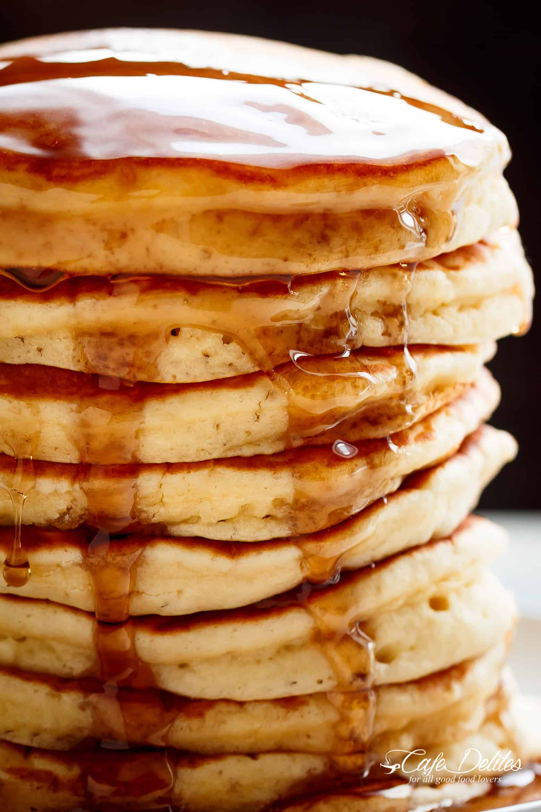

Good Ole' Fashioned Pancakes

Description
This is the most delicious stack of pancakes your taste buds will experience. Its FLAVORTOWN!!!. The recipe has been a hit since the beginning of time, but this isn't your ordinary stack of pancakes recipe.
Ingredients
- 1 1/2 cups all-purpose flour
- 3 1/2 teaspoons baking powder
- 1 teaspoon salt
- 1 tablespoon white sugar
- 1 1/4 cups milk
- 1 egg
- 3 tablespoons butter, melted
Steps
- In a large bowl, sift together the flour, baking powder, salt and sugar. Make a well in the center and pour in the milk, egg
and melted butter; mix until smooth.
- Heat a lightly oiled griddle or frying pan over medium-high heat. Pour or scoop the batter onto the griddle, using approximately 1/4 cup
for each pancake. Brown on both sides and serve hot.